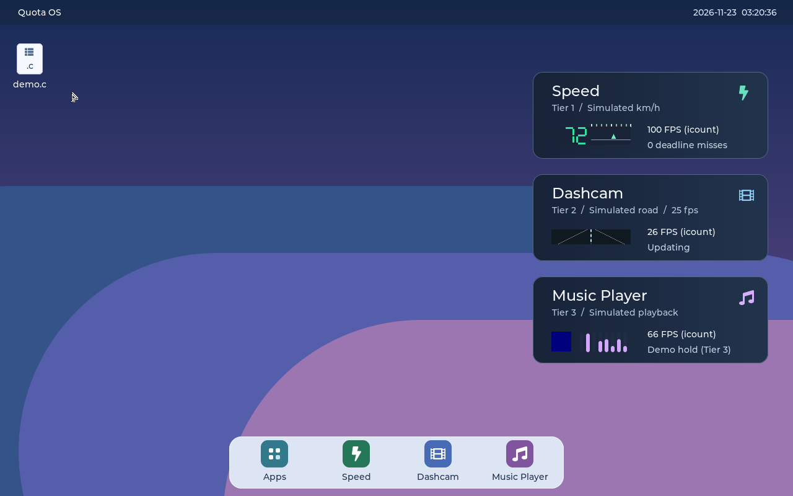

TIER 1
Vendor reserved
The speedometer and timer service use fixed CPU slots.
ARM64 / RESOURCE-PARTITIONED OS
Quota OS is an experimental ARM64 operating system. It reserves CPU time for critical tasks, admits applications when capacity is available, and shares spare time among ordinary workloads.


GPS Speed, Flight Camera and Music Player show their tier on the right of each card. Flight Camera animates simulated lane markings at a target of 25 FPS.
TIER 1
The speedometer and timer service use fixed CPU slots.
TIER 2
The dashcam starts with user approval and sufficient capacity for its declared minimum.
TIER 3
Music and desktop interaction share remaining CPU time under a common cap.
The default LVGL build runs the lightweight desktop. Quota OS LVGL+WebKit adds an optional in-guest runtime with WebKit for the interface and Node.js for the backend. The runtime is under development.
| Edition | Tier 1 | Tier 2 | Tier 3 |
|---|---|---|---|
| Quota OS LVGL | LVGL | LVGL | LVGL |
| Quota OS LVGL+WebKit | LVGL | LVGL | LVGL or WebKit + Node.js |
The acceptance test for Quota OS LVGL+WebKit puts three workloads on one desktop. GPS Speed must submit a frame every 10 ms. Once admitted, the Flight Camera must receive its reserved CPU time and submit a frame every 40 ms. A Tier 3 web page triggers JavaScript garbage collection while both instruments run. Verification of all three together on the same image is pending.
Quota OS explores resource isolation for automotive instruments and eVTOL displays. Critical display work has a fixed CPU slot, admitted applications receive a minimum, and ordinary workloads share a capped pool.
| System | Resource mechanism | Quota OS comparison |
|---|---|---|
| QNX | Adaptive partitions allocate minimum CPU shares to groups of threads and share spare capacity. | Quota OS gives applications three explicit admission policies and caps the aggregate best-effort pool. Official docs |
| seL4 MCS | Scheduling contexts carry a budget and period and can transfer execution budget across IPC. | System integrators define policy with those primitives. Quota OS defines the tier and admission policy in the OS. Official docs |
| Linux | SCHED_DEADLINE provides runtime, deadline and period parameters, admission control and optional bandwidth reclaiming. | An integrator can combine Linux controls to build similar isolation. Quota OS exposes the three-tier policy directly. Official docs |
| VxWorks 653 | ARINC 653-style time and space partitioning separates workloads into configured partitions. | Fixed partition timing is closest to Tier 1. Quota OS also demonstrates user-approved reservations and an aggregate shared pool. Official docs |
The published QEMU icount tests cover CPU scheduling and guest framebuffer commits. Comparative real-hardware latency, aircraft flight control, and safety certification remain outside the verified scope.
Open Test from Apps. Tier 2 checks reject an oversized request, admit a periodic job and cap a busy task. Tier 3 checks run a yielding task and contain a busy loop. Results include actual Music Player commits. Compare peak gaps separately with the 10 ms GPS Speed and 40 ms Flight Camera targets.


This QEMU TCG icount test measured guest framebuffer commits. GPU queue timing, host presentation, and physical display latency await verification.
Download the ARM64 image and launch instructions ↗
To run from a local checkout, install Git and QEMU with ARM64 system emulation, then run:
git clone https://github.com/leiquan/Quota-OS.git
cd Quota-OS
bash tools/run-files.shOn macOS with Homebrew LLVM and LLD installed, run these commands from the repository root. QEMU ARM64 runs the resulting kernel with one Cortex-A35 core and 64 MiB of RAM.
bash tools/build-lvgl-macos.sh
QUOTA_KERNEL=build/quotaos-lvgl.bin bash tools/run-files.shIn an empty Notes document, choose C Example or type the code below. Choose Save As... and enter demo.c. Open Apps → Shell, type a command at the quota> prompt, and press Enter. Type cc on its own to see an example using your saved filename.
int main(void) {
puts("Hello, Quota OS!");
return 0;
}cc demo.c -o hello
./helloThe initial C subset accepts a header-free int main(void), one puts string literal, and return 0. The executable runs in Tier 3. Tier 2 launch parameters are pending.